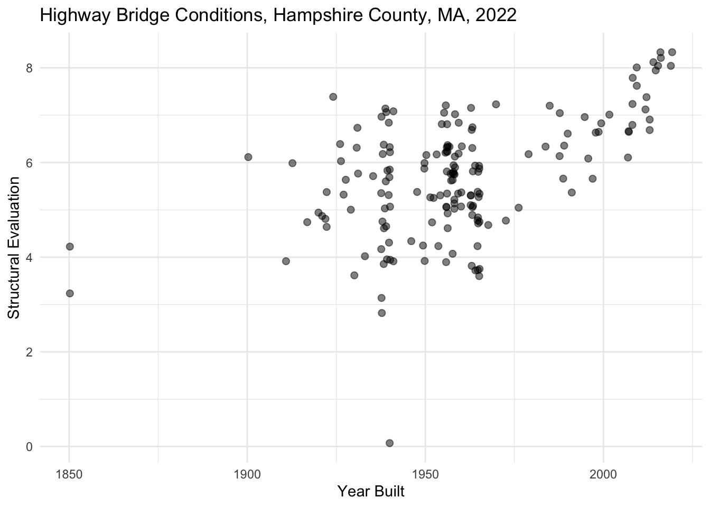
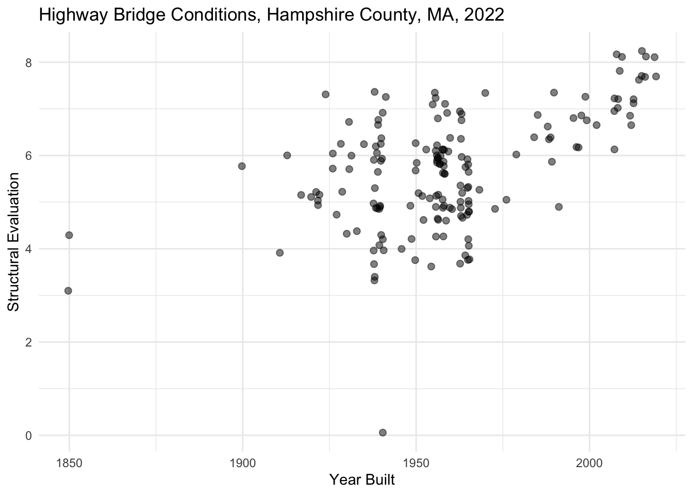
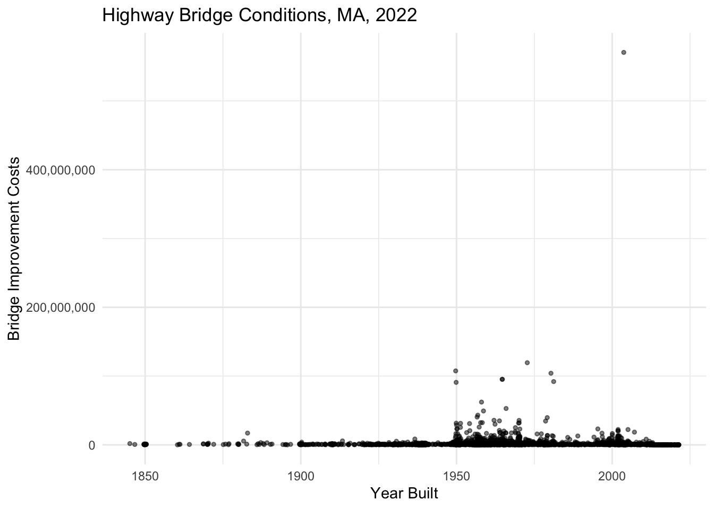
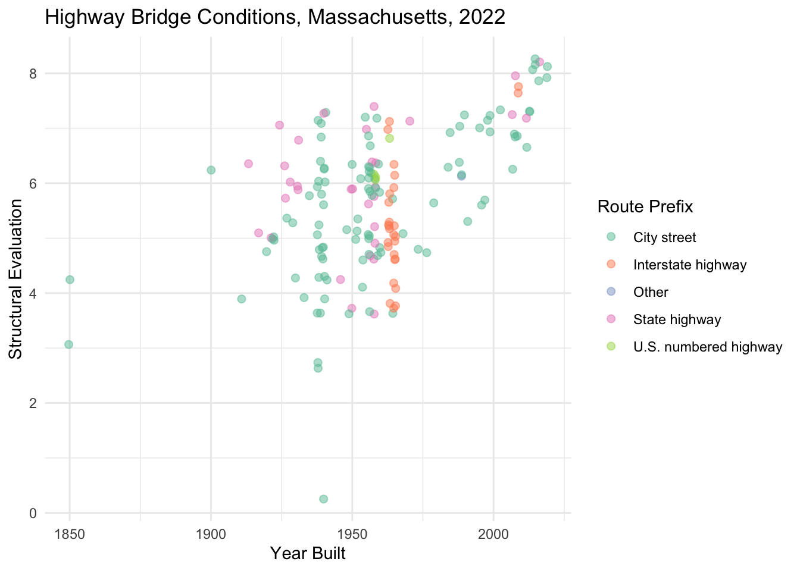
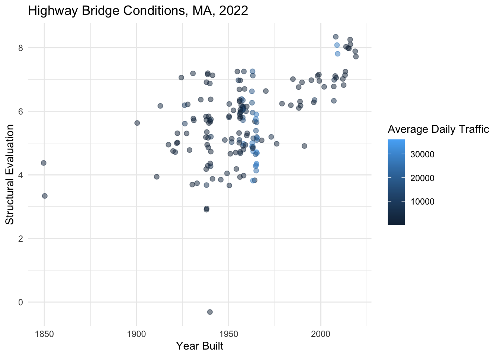
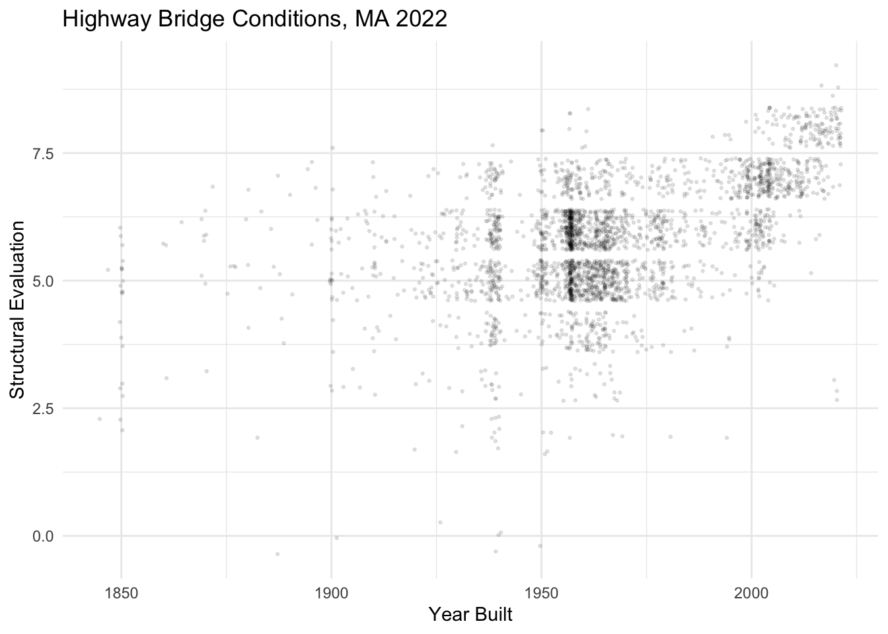

library(tidyverse)
library(RColorBrewer)
counties <- read_csv("https://raw.githubusercontent.com/sds-192-intro-fall22/sds-192-public-website-quarto/a8b64e3070ca2543b904d4d92780b09e6062ced6/website/data/nbi_counties.csv")
route_prefixes <- read_csv("https://raw.githubusercontent.com/sds-192-intro-fall22/sds-192-public-website-quarto/a8b64e3070ca2543b904d4d92780b09e6062ced6/website/data/nbi_route_pre.csv")
maintenance <- read_csv("https://raw.githubusercontent.com/sds-192-intro-fall22/sds-192-public-website-quarto/a8b64e3070ca2543b904d4d92780b09e6062ced6/website/data/nbi_maintenance.csv")
kinds <- read_csv("https://raw.githubusercontent.com/sds-192-intro-fall22/sds-192-public-website-quarto/a8b64e3070ca2543b904d4d92780b09e6062ced6/website/data/nbi_kind.csv")
nbi_ma <- read.delim("https://www.fhwa.dot.gov/bridge/nbi/2022/delimited/MA22.txt", sep = ",") %>%
left_join(counties) %>%
left_join(route_prefixes) %>%
left_join(maintenance) %>%
left_join(kinds) %>%
filter(SERVICE_ON_042A == 1) %>%
select(STRUCTURE_NUMBER_008, COUNTY_CODE_003_L, ROUTE_PREFIX_005B_L, MAINTENANCE_021_L, YEAR_BUILT_027, ADT_029, STRUCTURE_KIND_043A_L, STRUCTURAL_EVAL_067, BRIDGE_IMP_COST_094) %>%
mutate(STRUCTURE_KIND_043A_L =
case_when(
STRUCTURE_KIND_043A_L == "Concrete continuous" ~ "Concrete",
STRUCTURE_KIND_043A_L == "Steel continuous" ~ "Steel",
STRUCTURE_KIND_043A_L == "Prestressed concrete continuous" ~ "Prestressed concrete",
TRUE ~ STRUCTURE_KIND_043A_L)) %>%
mutate(BRIDGE_IMP_COST_094 = BRIDGE_IMP_COST_094 * 1000)
nbi_hampshire <- nbi_ma %>% filter(COUNTY_CODE_003_L == "Hampshire")Lab 2: Visualization Aesthetics
Setting Up Your Environment
Install the RColorBrewer package by entering the following into your
RConsole:install.packages("RColorBrewer")Run the code below to the import the bridge inventory for Massachusetts and for Hampshire County into
R. Call me or one of the data assistants over if you get an error.
Exercise 1
Below, adjust the size to 2 and the alpha to 0.5, and the position to "jitter". Note how this changes the plot.
nbi_hampshire %>%
ggplot(aes(x = YEAR_BUILT_027,
y = STRUCTURAL_EVAL_067)) +
geom_point(size = 1, alpha = 1, position = "identity") +
labs(title = "Highway Bridge Conditions, Hampshire County, MA, 2022",
x = "Year Built",
y = "Structural Evaluation") +
theme_minimal()
Exercise 2
In the plot below, color the points on the plot with a qualitative palette by setting col= to the categorical variable ROUTE_PREFIX_005B_L. Remember that, in this case, color is an aesthetic, so this must be added inside of the aes() function. Add a label for the legend by setting col= in the labs() function to a phrase that describes the color variable.
nbi_hampshire %>%
ggplot(aes(x = YEAR_BUILT_027,
y = STRUCTURAL_EVAL_067)) +
geom_point(size = 2, alpha = 0.5, position = "jitter") +
labs(title = "Highway Bridge Conditions, Hampshire County, MA, 2022",
x = "Year Built",
y = "Structural Evaluation",
col = "ADD LEGED LABEL HERE") +
theme_minimal()
Exercise 3
Copy the plot from above below but swap out the variable your mapped to the color aesthetic with a numeric variable from the dataset. Be sure to also adjust the legend label. What kind of palette gets created? What new information do you gain about Hampshire County bridges from the plot?
# Create plot here
Exercise 4
In the plot below, assign the shape of the data on the plot by setting shape= to the categorical variable STRUCTURE_KIND_043A_L. Remember that, in this case, shape is an aesthetic, so this must be added inside of the aes() function. Add a label for the legend by setting shape= in the labs() function to a phrase that describes the shape variable.
nbi_hampshire %>%
ggplot(aes(x = YEAR_BUILT_027,
y = STRUCTURAL_EVAL_067)) +
geom_point(size = 2, alpha = 0.5, position = "jitter") +
labs(title = "Highway Bridge Conditions, Hampshire County, MA, 2022",
x = "Year Built",
y = "Structural Evaluation",
shape = "ADD LEGED LABEL HERE") +
theme_minimal()
Exercise 5
Copy one of your plots from above, and inside the aes() function, set size= to a numeric variable not already represented on the plot. Keep in mind that you’ll need to remove the size= attribute from geom_point() for the points to size correctly. Be sure to also adjust the legend labels. What new information do you gain about Hampshire County bridges from the plot?
# Create plot herenbi_ma %>%
ggplot(aes(x = YEAR_BUILT_027,
y = BRIDGE_IMP_COST_094)) +
geom_point(size = 1, alpha = 0.5, position = "jitter") +
labs(title = "Highway Bridge Conditions, MA, 2022",
x = "Year Built",
y = "Bridge Improvement Costs") +
theme_minimal() +
scale_y_continuous(labels = scales::comma)Warning: Removed 1 rows containing missing values (geom_point).
Exercise 6
Copy the plot that I created above, and change the y-axis scale from continuous to log10. You might reference the formula specified above or reference the ggplot cheatsheet for help. Note that your y-axis will appear in scientific notation. Convert it to comma notation by adding: labels = scales::comma as an argument in the scale function call.
# Create plot here
Exercise 7
The Interstate Highway Act of 1956 (signed under Dwight D. Eisenhower) established the U.S.’s interstate highway system and is considered the country’s largest public works project. Adjust the x-axis scale of the plot below to help tell this story. Specifically, bin years into before 1954 (when Eisenhower was elected) and 1954-2021. Set the label at 1954 to “Eisenhower Elected” and the label at 2021 to “Today.”
nbi_ma %>%
ggplot(aes(x = YEAR_BUILT_027,
y = ROUTE_PREFIX_005B_L)) +
geom_point(size = 1, alpha = 0.2, position = "jitter") +
labs(title = "Highway Bridge Conditions, MA, 2022",
x = "Year Built",
y = "Route Prefix") +
theme_minimal()
Exercise 8
Add `+ scale_color_brewer()` to the ggplot() object below and assign a categorical palette. Refer to the ggplot cheatsheet or the help pages for help with formatting the function call.
nbi_hampshire %>%
ggplot(aes(x = YEAR_BUILT_027,
y = STRUCTURAL_EVAL_067,
col = ROUTE_PREFIX_005B_L)) +
geom_point(size = 2, alpha = 0.5, position = "jitter") +
labs(title = "Highway Bridge Conditions, Massachusetts, 2022",
x = "Year Built",
y = "Structural Evaluation",
col = "Route Prefix") +
theme_minimal() +
scale_color_brewer(palette = "Set2")
Exercise 9
Add `+ scale_color_distiller()` to the ggplot() object below and assign a sequential palette. By default the colors will be ordered from darkest to lightest. Add an argument to the function call to reverse the direction of the colors. Refer to the ggplot cheatsheet or the help pages for help with formatting the function call.
nbi_hampshire %>%
ggplot(aes(x = YEAR_BUILT_027,
y = STRUCTURAL_EVAL_067,
col = ADT_029)) +
geom_point(size = 2, alpha = 0.5, position = "jitter") +
labs(title = "Highway Bridge Conditions, MA, 2022",
x = "Year Built",
y = "Structural Evaluation",
col = "Average Daily Traffic") +
theme_minimal()
Exercise 10
Facet the plot below by STRUCTURE_KIND_043A_L to see the degree of structural deficiencies for different kinds of highway bridges of different ages in Massachusetts.
nbi_ma %>%
ggplot(aes(x = YEAR_BUILT_027,
y = STRUCTURAL_EVAL_067)) +
geom_point(alpha = 0.1, size = 0.5, position = "jitter") +
labs(title = "Highway Bridge Conditions, MA 2022",
x = "Year Built",
y = "Structural Evaluation") +
theme_minimal()